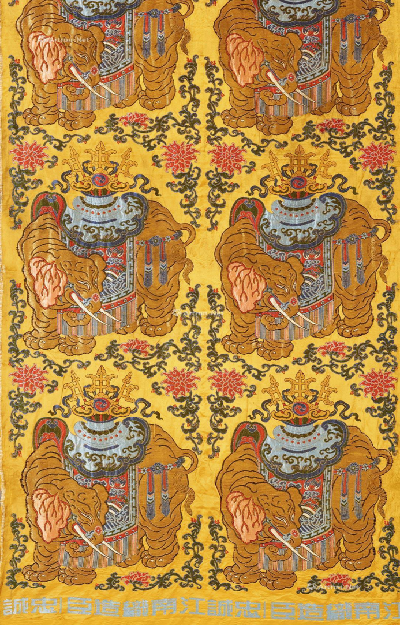
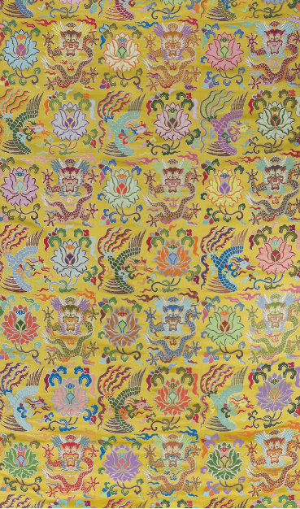
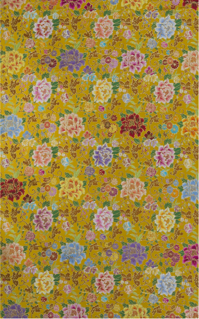
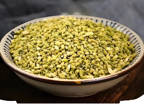
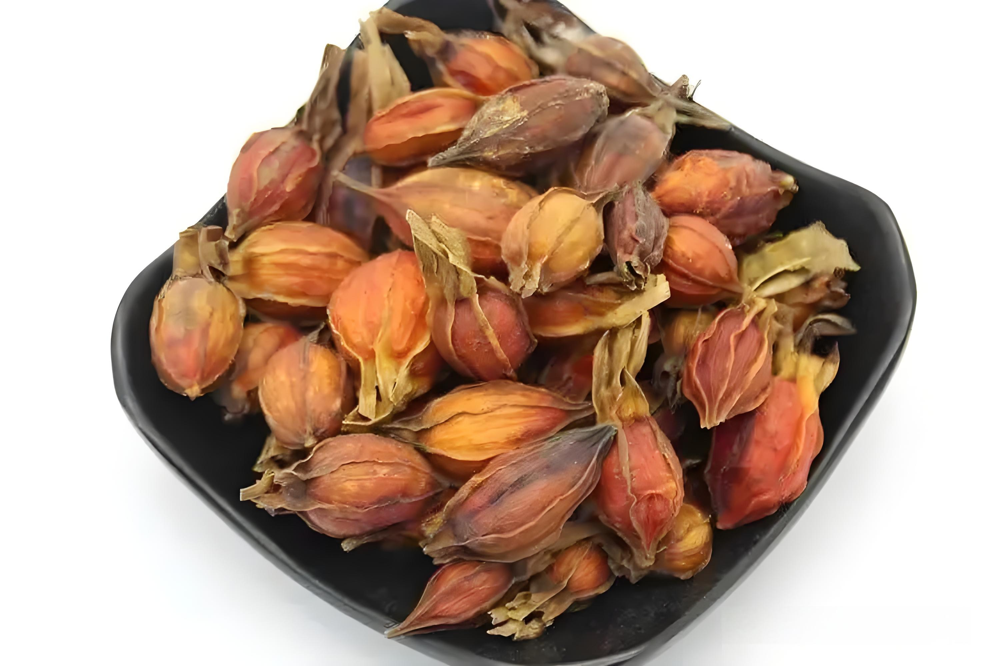
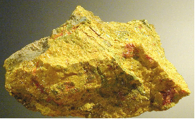
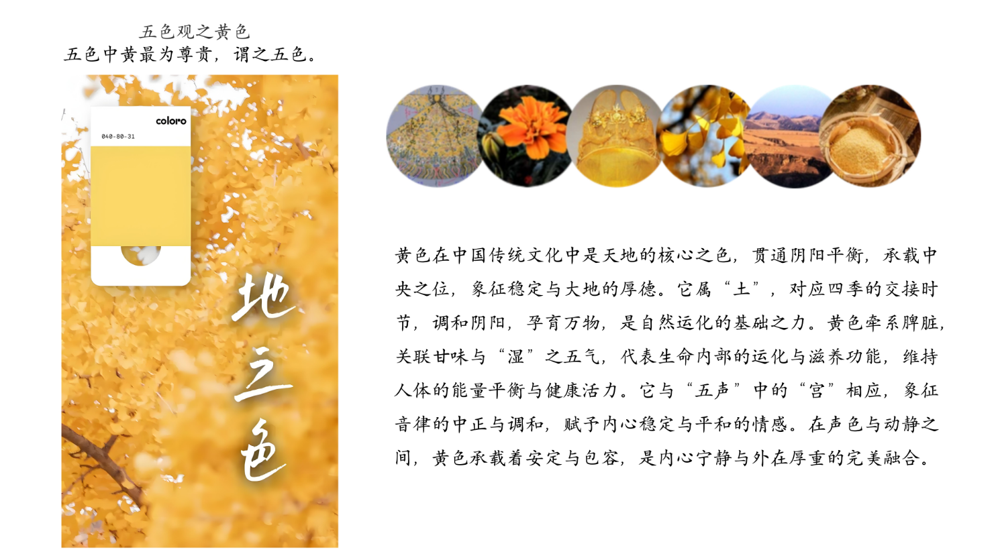

藏于江南丝绸文化博物馆

黄地太平有象
藏于江南丝绸文化博物馆
藏于江南丝绸文化博物馆

黄地龙凤莲妆花缎
藏于江南丝绸文化博物馆
藏于江南丝绸文化博物馆

黄地缠枝牡丹妆花缎
藏于江南丝绸文化博物馆
藏于江南丝绸文化博物馆
| 名称 | 别名 | 类型 | 主要化学成分 |
|---|---|---|---|
| 槐米 | 槐花、槐米 | 豆科，落叶乔木槐树的花蕾及花朵 | |
| 栀子 | 林兰、 鲜支 | ||
| 雄黄 | 石黄、雄黄 | 天然矿石 |

槐米
槐米是槐树（学名：Sophora japonica）的干燥花蕾，属于豆科植物，是传统天然黄色染料的重要来源，可用于染制织物，呈现出柔和的黄色或浅棕色。槐米含有丰富的黄酮类化合物，尤其是芸香苷（芦丁），在中医学中被广泛用于凉血止血、清热降火，常用于治疗高血压、出血性疾病等。
栀子
栀子（学名：Gardenia jasminoides），是一种茜草科植物，其果实是重要的天然黄色染料来源，能够提取出色泽明亮的黄色或金黄色，用于染制丝绸、棉布等传统织物。栀子果实还具有药用价值，在中医学中被广泛用于清热泻火、凉血解毒、止血消肿，常用于治疗黄疸、热病烦躁、目赤肿痛等症。


雄黄
雄黄（学名：Realgar），是一种天然硫化砷矿物，呈橙黄色或红橙色，古代广泛用于矿物染料、药用和驱虫。作为颜料，雄黄曾用于传统绘画和工艺品装饰，赋予作品鲜艳的橙红色。在中医学中，雄黄被认为具有解毒杀虫、燥湿祛痰的功效，用于治疗疮疡、毒虫咬伤等症，同时也被用于驱蛇、驱虫等民俗用途。然而，因其含有有毒成分，使用需格外谨慎。雄黄不仅是传统工艺和医学的重要资源，还在中国古代文化中占有特殊地位，如端午节习俗中的“雄黄酒”。

云锦时代
Copyright© 2024 All Rights qing.
智绘云锦实践项目组
地址：南京江宁科学园龙眠大道629号 邮编：211188 电话:888-888888